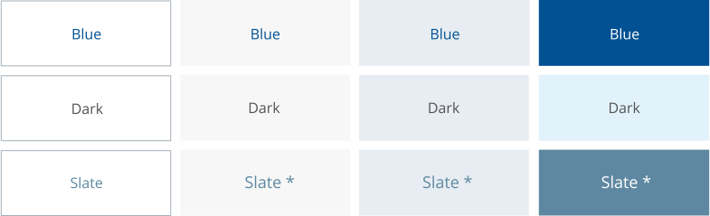

Digital Color Usage
Unum’s colors are a distinctive marker for our brand. The colors chosen represents our three cornerstones: simplicity (white), empathy (blue), and expertise (slate). These colors should be the primary palette used when designing with accents of our secondary palette (lawn, gold, and pool) as needed. The Unum colors are a visual representation of our brand. It is what people will see and connect with first. When making use of our colors, be sure to follow the guidelines as outlined in our brand policies.
Do not use our digital colors in a manner not within the guidelines. Have questions about how to properly use our digital colors or other brand features? Contact us here.
Check to make sure text on primary colors pass AA color contrast. If you are uncertain, please utilize Web Aim to check your ratio.
Unum Primary Colors
Primary colors are the most versatile and should be the most prevalent in the design. They should be 60% of the design. They can be used in the following ways:
- As text
- As a background with copy
- As accents such as lines or in iconography
- Can be used in illustration
Unum Blue - HEX #015193
Slate - HEX #5A7184
Primary Tints
The primary tints may be used as background, but NOT as text. They also must be used in conjunction with the primary color they represent.
Blue Dark - HEX #01335C
Blue Light - HEX #0471CC
Slate Dark - HEX #435463
Slate Light - HEX #758DA1
Unum Secondary Colors
Secondary colors are to be used at 30% of the design. The secondary colors are complementary of our primary colors. They add variety and should be used to create a visual hierarchy, adding emphasis to sections of your design.
These colors are primarily decorative but can also serve to attach meaning to elements on a page. They can be used in the following ways:
- As accents such as lines or iconography
Note: Only Lawn Dark ( #357C08) may be used as a background with white text for buttons due to accessibility.
Pool - HEX #47B5BD
Lawn - HEX #8CC442
Gold - HEX #FAC833
Unum Tertiary Colors
Tertiary colors and tints are to be used sparingly. They are NOT to be used as background or text colors. They should be used as accent lines, occasionally as borders, and in illustrations.
Orange - HEX #E89527
Yellow Green - HEX #C1CF01
Sky - HEX #0376BB
Examples of Usage for Primary Colors
Type & Color
Primary colors are the main source for text as they provide the highest contrast level for accessibility. Below, see examples of how to pair text colors with background colors:
DO
* Slate text over #E7EEF3, #F7F7F7 and #5E88A1 must be over 24px.